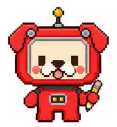

Keep rolling.
For momentum, milestones, and a little fun.
Download GIF
archieTake Archie homeMEET YOUR LITTLE STUDY BUDDY
A curious red robot dog with a pencil
and a can-do attitude. Made to bring
a little company to everyday work.
One small companion. A whole range of expressions.
MORE WAYS TO BE ARCHIE
A little cool. A lot of heart.
Four new loops, ready to go.
For momentum, milestones, and a little fun.
Download GIFFor a confident entrance or a job well done.
Download GIFFor favorites, thank-yous, and things you love.
Download GIFFor pondering a question or forming an idea.
Download GIF02 / SMALL, MEDIUM, MAIN CHARACTER
From a tiny hello in a sentence
to a companion with room to play.
03 / A LITTLE COMPANY
Small moments of personality.
Right where they’re useful.
Big ideas start
with small steps.
You’ve got this
A hello, a sign-off, a little encouragement. Archie sits right on the text baseline.
Good ideas take a little pencil time.
Let a thoughtful look, a patient paw, or a little hop show what’s happening.
Make something small.
Make it matter.
A small companion beside your work. Drag Archie around, or focus and use the arrow keys.
04 / ALL EYES ON YOU
Move your pointer around the pad.
Archie follows with a turn of the head.
On touch, tap anywhere to get Archie’s attention.
Bring Archie to your desktop, or add a wave to your own page.
{kind=link}
{kind=link}
{kind=link}
{kind=link}
{kind=link}
{kind=link}